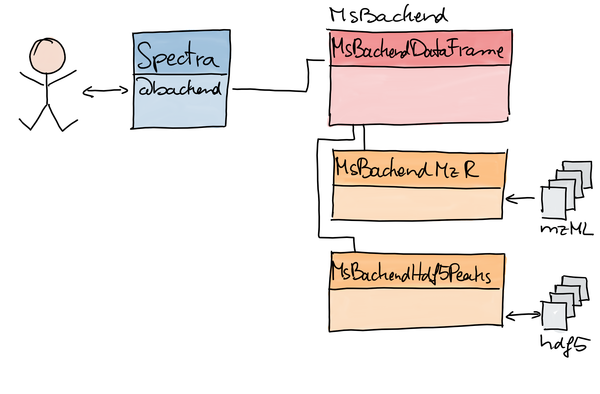

Flexible Infrastructure for Mass Spectrometry Data
Laurent Gatto1,  , Johannes Rainer2, , Sebastian Gibb3,
, Johannes Rainer2, , Sebastian Gibb3,
1 Computational Biology and Bioinformatics Group, de Duve Institute, UCLouvain
2 Institute for Biomedicine, Eurac Research
3 Department of Anaesthesiology and Intensive Care, University Medicine Greifswald
Introduction
Mass Spectrometry (MS) Data
- Paired measurements:
- intensity (counts) vs m/z (mass-to-charge ratio).
- intensity vs retention time.
- Additional various metatdata.
Problems
- Vendor-specific, closed file formats.
- Various open-formats, e.g. mzML, mzXML, mz5, CDF, MGF, CSV
- Spectra libraries/Annotation information in databases, e.g. SQL
- Multiple R-packages require different file formats and/or data structures.
- Larger experiments don’t fit into RAM.
Solution: Spectra1
- Common, flexible data structure and interface.
- Supports various file formats by different backends.
Implementation Details
Spectra class
- Handles one or multiple MS spectra.
- Implements typical processing functionality.
- Isolation from type of data storage (handled by backend classes)
MsBackend classes
- Isolation from spectra handling and processing.
- Specific class for each type of data storage.
| class | source | storage | writeable |
|---|---|---|---|
| MsBackendDataFrame1 | manual | in-memory | yes |
| MsBackendHdf5Peaks1 | hdf5 files | on-disk | yes |
| MsBackendMzR1 | mzML, mzXML and CDF files | on-disk | no |
| MsBackendHmdbXml2 | XML files | on-disk | yes |
| MsBackendRawFileReader3 | Thermo .raw files | on-disk | no |

The user interacts with a Spectra object. It takes care of the data storage by different backend classes.
Example
# Load packages
library(Spectra)
library(magrittr)
# Import data
#sps <- Spectra("data/20191107_Mix2_CE20.mzML", backend = MsBackendMzR())
sps <- Spectra()
# Select all MS2 spectra for a [M+Na]+ ion of Fructose.
mzr <- 203.0526
mzr <- 156.07675 # Histidine
fruct <- sps %>%
filterMsLevel(2) %>%
filterPrecursorMz(mz = mzr + ppm(c(-mzr, mzr), 20))
# Centroid and clean spectra.
fruct <- fruct %>%
pickPeaks() %>%
removePeaks(threshold = 500) %>%
clean(all = TRUE)
# Change backend: load data in memory.
#fruct <- setBackend(fruct, MsBackendDataFrame())References
1. Gatto, L., Rainer, J. & Gibb, S. Spectra: Spectra infrastructure for mass spectrometry data.
2. Gatto, L., Rainer, J. & Gibb, S. MsBackendHmdb: Mass spectrometry data backends for the human metabolome database. (2019).
3. Panse, C. & Kockmann, T. MsBackendRawFileReader: Bridging spectra and thermofinnigan raw files. (2019).